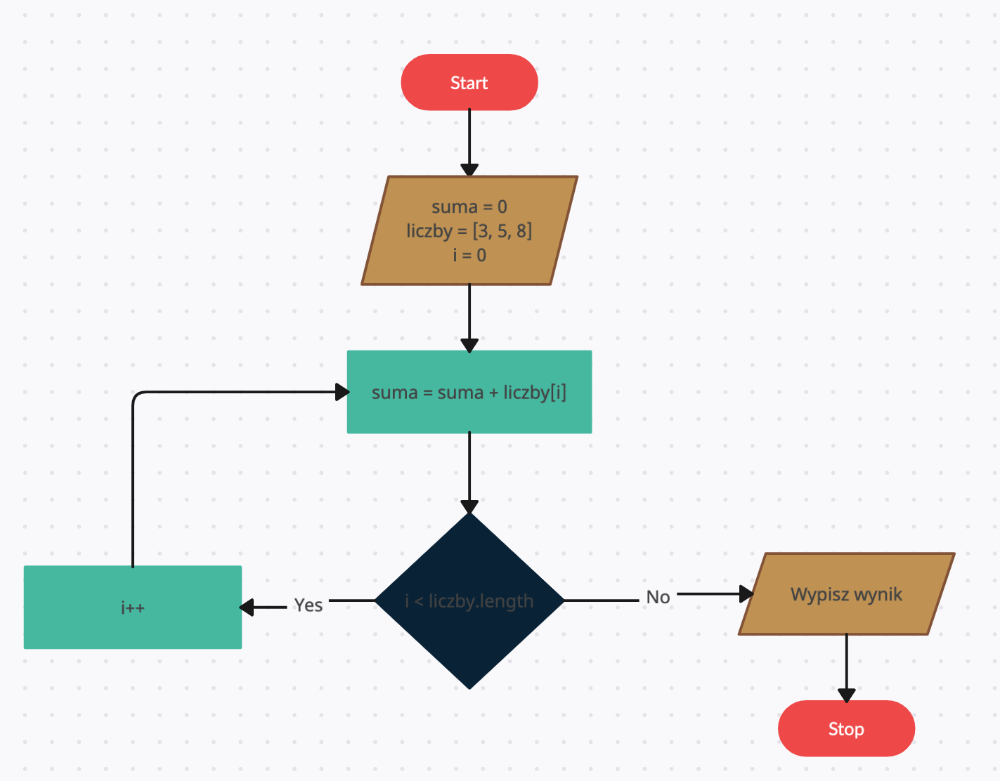

# Wprowadzenie do algorytmów i struktur danych w Javie ## Listopad 2023
#### Przegląd algorytmów - Algorytmy jako procedury krok po kroku do obliczeń, przetwarzania danych i automatycznego rozumowania.
#### Schemat blokowy algorytmu
#### Pseudokod Pseudokod to imitacja prawdziwego kodu, która ma przedstawić działanie algorytmu. <pre><code data-trim data-noescape data-line-numbers> n = 6 dla i od 0 do n wypisz(i) </code></pre>
#### Lista kroków List kroków przedstawia algorytm w języku natrualnym <pre><code data-trim data-noescape data-line-numbers> 1. Zadeklaruj zmienna n o wartości 6 2. Powtarzaj n razy: 2.1. Wypisz numer powtórzenia </code></pre>
#### Zadanie Napisz program w Javie realizujący algorytm na podstawie przedstawionego schematu blokowego. 
#### Zadanie Utwórz schemat blokowy poniższego kodu: <pre><code data-trim data-noescape data-line-numbers> int[] list = {1, 2, 3}; for (int i = 0; i < list.length; i++) { for (int j = 0; j < list.length; j++) { System.out.println(i + ": " + list[j]); } } </code></pre>
#### Złożoność algorytmów i notacja Big O - Złożoność algorytmu odnosi się do ilości zasobów komputerowych (czasu wykonania, pamięci) potrzebnych do jego wykonania.
#### Notacja Big O - Notacja Big O: Standardowa notacja do opisania górnego limitu złożoności algorytmu. - Przykład: O(n) - czas wykonania algorytmu przejścia po tablicy zwiększa się wraz z większa liczba elementów w tej tablicy
#### Notacja Big O Przykłady złożoności - Stała: O(1) - np. dostęp do elementu tablicy po indeksie. - Logarytmiczna: O(log n) - np. wyszukiwanie binarne. - Liniowa: O(n) - np. przeszukiwanie liniowe w tablicy. - Kwadratowa: O(n²) - np. sortowanie bąbelkowe. - Wykładnicza: O(2^n) - np. algorytmy rekurencyjne rozwiązujące problem plecakowy.
#### Notacja Big O <img src="algor.jpg" />
#### Zadanie Określ złozoność ponizszego algorytmu <pre><code data-trim data-noescape data-line-numbers> int[] list = {1, 2, 3}; int n = list.length; for (int i = 0; i < n; i++) { for (int j = 0; j < n; j++) { System.out.println(i + ": " + list[j]); } } </code></pre>
#### Podstawowe struktury danych - ArrayList - LinkedList - HashMap - Set - Stack - Queue
#### Podstawowe struktury danych ArrayList jest bardzo podobny do tradycyjnej tablicy. Jest to jego bardziej uzyteczna implementacja
#### Array <pre><code data-trim data-noescape data-line-numbers> public static void arrayTest() { // konieczność zadeklarowania wielkości tablicy // brak mozliwości zmiany wielkości tablicy po deklaracji int[] numbers = new int[2]; numbers[0] = 5; // możliwość dodania wartości tylko w konkretnym miejscu numbers[1] = 10; numbers[2] = 9; // brak możliwości przekroczenia zadeklarowanej wielkości System.out.println(numbers); // brak metody .toString() ([I@4617c264) } </code></pre>
#### ArrayList <pre><code data-trim data-noescape data-line-numbers> public static void arrayListTest() { List< Integer > numbers = new ArrayList<>(); // lista o nieokreślonej wielkości numbers.add(5); // możliwość zwiększenia tablicy poprzez dodanie wartości na koniec numbers.add(3); numbers.add(0, 7); // element wpisany na zajęte miejsce przesunie wartości tablicy numbers.remove(1); // możliwość usunięcia elementu tablicy - zmniejszenia jej rozmiaru numbers.addAll(numbers); // możliwość połączenia tablic System.out.println(numbers); // zaimplementowana metoda .toString() ([7, 3, 7, 3]) } </code></pre>
#### ArrayList Pod spodem jednak ArrayList jest tradycyjna tablica, na której wykonywane sa liczne podstawienia i nadpisania. Array list podobnie jak array odwołuje się do elementu tablicy po indeksie. Zatem jego złozoność wykonania metody .get() to O(1)
#### ArrayList - Gorzej wyglada sytuacja gdy dopisujemy nowe wartości. Wówczas stara tablica musi zostać utworzona a jej wartości musza zostać dopisane do nowej tablicy.
#### ArrayList implementacja metody add <pre><code data-trim data-noescape data-line-numbers> public class MyArrayList< T > { private Object[] myList = new Object[0]; public int size = 0; public void add(T element){ Object[] newElements = new Object[myList.length + 1]; for(int i = 0; i < myList.length; i++){ newElements[i] = myList[i]; } newElements[newElements.length - 1] = element; size = newElements.length; this.myList = newElements; } } </code></pre> Jaka jest złozność operacji wstawienia elementu?
#### LinkedList - Lista połączona, w której każdy element (węzeł) zawiera referencję do następnego elementu w sekwencji. - Umożliwia szybkie wstawianie i usuwanie elementów, ponieważ nie wymaga przesuwania innych elementów. - Idealna do zastosowań, gdzie często dodaje się lub usuwa elementy z listy.
#### LinkedList
#### LinkedList implementacja metody add() <pre><code data-trim data-noescape data-line-numbers> public class MyLinkedList< T > { Object myValue; MyLinkedList nextElement; public int size = 0; public void add(T value){ MyLinkedList< T > newElement = new MyLinkedList<>(); newElement.myValue = value; newElement.nextElement = this.nextElement; this.nextElement = newElement; } } </code></pre>
#### HashMap - Struktura danych oparta na tablicy haszującej, zapewniająca szybki dostęp do elementów za pomocą unikalnych kluczy. - O(1) średnia złożoność czasowa dla operacji dodawania, wyszukiwania i usuwania. - Klucze muszą mieć unikalne wartości, a każdy klucz jest powiązany z jedną wartością.
#### HashMap <pre><code data-trim data-noescape data-line-numbers> Map< String, Integer > hashMap = new HashMap<>(); hashMap.put("jeden", 1); // Dodaje parę klucz-wartość hashMap.put("dwa", 2); System.out.println(hashMap.get("jeden")); // 1 System.out.println(hashMap.containsKey("trzy")); // false </code></pre>
#### Set - Kolekcja, która nie zawiera duplikatów elementów. Przechowuje tylko unikalne wartości. - HashSet, TreeSet, LinkedHashSet to popularne implementacje Set w Java.
#### Set <pre><code data-trim data-noescape data-line-numbers> Set< Integer > hashSet = new HashSet<>(); hashSet.add(1); // Dodaje element do zbioru hashSet.add(2); hashSet.add(1); // Duplikat - nie zostanie dodany System.out.println(hashSet); // [1, 2] </code></pre>
#### Stack - Struktura danych typu LIFO (Last In, First Out), gdzie ostatni dodany element jest pierwszym, który zostaje usunięty. - Oferuje podstawowe operacje, takie jak push, pop, peek.
#### Stack <img src="stack.webp" />
#### Stack <pre><code data-trim data-noescape data-line-numbers> Stack< Integer > stack = new Stack<>(); stack.push(1); // Dodaje element na wierzchołek stosu stack.push(2); System.out.println(stack.peek()); // 2 (podgląda, nie usuwa) stack.pop(); // Usuwa element z wierzchołka stosu System.out.println(stack); // [1] </code></pre>
#### Queue - Struktura danych typu FIFO (First In, First Out), gdzie pierwszy dodany element jest pierwszym, który zostaje usunięty. - Oferuje operacje takie jak enqueue (dodawanie na końcu kolejki) i dequeue (usuwanie z początku kolejki).
#### Queue <img src="Data_Queue.png" />
#### Queue <pre><code data-trim data-noescape data-line-numbers> Queue< Integer > queue = new ArrayDeque<>(); queue.add(1); // Dodaje element na koniec kolejki queue.add(2); System.out.println(queue.poll()); // 1 (usuwa i zwraca pierwszy element) System.out.println(queue); // [2] </code></pre>
#### Podstawowe algorytmy sortowania - sortowanie bąbelkowe - sortowanie przez wybieranie - sortowanie przez wstawianie
#### Sortowanie bąbelkowe - Prosty algorytm sortowania, który wielokrotnie przechodzi przez listę, zamieniając elementy, jeśli są w złej kolejności.
#### Sortowanie bąbelkowe <img src="Bubble-sort-example-300px.gif" />
#### Sortowanie bąbelkowe <pre><code data-trim data-noescape data-line-numbers> bubbleSort(array) n = length(array) dla i od 0 do n-1 dla j od 0 do n-i-1 jeśli array[j] > array[j+1] zamień array[j] oraz array[j+1] </code></pre> [8 2 9 5]
#### Sortowanie bąbelkowe <pre><code data-trim data-noescape data-line-numbers> bubbleSort(array) n = length(array) dla i od 0 do n-1 dla j od 0 do n-i-1 jeśli array[j] > array[j+1] zamień array[j] oraz array[j+1] </code></pre> [2 8 9 5]
#### Sortowanie bąbelkowe <pre><code data-trim data-noescape data-line-numbers> bubbleSort(array) n = length(array) dla i od 0 do n-1 dla j od 0 do n-i-1 jeśli array[j] > array[j+1] zamień array[j] oraz array[j+1] </code></pre> [2 8 5 9]
#### Sortowanie bąbelkowe <pre><code data-trim data-noescape data-line-numbers> bubbleSort(array) n = length(array) dla i od 0 do n-1 dla j od 0 do n-i-1 jeśli array[j] > array[j+1] zamień array[j] oraz array[j+1] </code></pre> [2 5 8 9]
#### Sortowanie przez wybieranie (Selection Sort) - Algorytm sortowania, który dzieli listę na dwie części: posortowaną i nieposortowaną, i sukcesywnie przenosi najmniejsze elementy z nieposortowanej części na koniec posortowanej.
#### Sortowanie przez wybieranie (Selection Sort) <img src="selection-sort.gif" />
#### Sortowanie przez wybieranie <pre><code data-trim data-noescape data-line-numbers> selectionSort(array) n = length(array) dla i od 0 do n-1 min_idx = i dla j od i+1 do n jeśli array[j] < array[min_idx] min_idx = j zamień array[min_idx] oraz array[i] </code></pre> [8 2 9 5]
#### Sortowanie przez wybieranie <pre><code data-trim data-noescape data-line-numbers> selectionSort(array) n = length(array) dla i od 0 do n-1 min_idx = i dla j od i+1 do n jeśli array[j] < array[min_idx] min_idx = j zamień array[min_idx] oraz array[i] </code></pre> [2 8 9 5]
#### Sortowanie przez wybieranie <pre><code data-trim data-noescape data-line-numbers> selectionSort(array) n = length(array) dla i od 0 do n-1 min_idx = i dla j od i+1 do n jeśli array[j] < array[min_idx] min_idx = j zamień array[min_idx] oraz array[i] </code></pre> [2 5 9 8]
#### Sortowanie przez wybieranie <pre><code data-trim data-noescape data-line-numbers> selectionSort(array) n = length(array) dla i od 0 do n-1 min_idx = i dla j od i+1 do n jeśli array[j] < array[min_idx] min_idx = j zamień array[min_idx] oraz array[i] </code></pre> [2 5 8 9]
#### Sortowanie przez wstawianie (Insertion Sort) - Algorytm sortowania, który iteracyjnie buduje posortowaną część listy, wstawiając każdy kolejny element w odpowiednie miejsce.
#### Sortowanie przez wstawianie (Insertion Sort) <img src="Insertion-sort-example.gif" />
#### Sortowanie przez wstawianie (Insertion Sort) <pre><code data-trim data-noescape data-line-numbers> insertionSort(array) n = length(array) dla i od 1 do n klucz = array[i] j = i - 1 dopóki j >= 0 oraz array[j] > klucz przesuń array[j] o jedno miejsce do przodu j = j - 1 umieść klucz na pozycji j + 1 </code></pre> [8 2 9 5]
#### Sortowanie przez wstawianie (Insertion Sort) <pre><code data-trim data-noescape data-line-numbers> insertionSort(array) n = length(array) dla i od 1 do n klucz = array[i] j = i - 1 dopóki j >= 0 oraz array[j] > klucz przesuń array[j] o jedno miejsce do przodu j = j - 1 umieść klucz na pozycji j + 1 </code></pre> [2 8 9 5]
#### Sortowanie przez wstawianie (Insertion Sort) <pre><code data-trim data-noescape data-line-numbers> insertionSort(array) n = length(array) dla i od 1 do n klucz = array[i] j = i - 1 dopóki j >= 0 oraz array[j] > klucz przesuń array[j] o jedno miejsce do przodu j = j - 1 umieść klucz na pozycji j + 1 </code></pre> [2 8 5 9]
#### Sortowanie przez wstawianie (Insertion Sort) <pre><code data-trim data-noescape data-line-numbers> insertionSort(array) n = length(array) dla i od 1 do n klucz = array[i] j = i - 1 dopóki j >= 0 oraz array[j] > klucz przesuń array[j] o jedno miejsce do przodu j = j - 1 umieść klucz na pozycji j + 1 </code></pre> [2 5 8 9]
#### Programowanie dynamiczne - dziel i zwycięzaj - wyszukiwanie binarne
#### Programowanie dynamiczne - Metoda rozwiązywania złożonych problemów poprzez rozkładanie ich na prostsze podproblemy. - Zapamiętuje wyniki podproblemów aby uniknąć wielokrotnego rozwiązywania tych samych kwestii.
#### Ciag fibonacciego 0 1 1 2 3 5 8 13 21 34 55 ...
#### Ciag fibonacciego 1. Podział Problemu: Problem polega na obliczeniu n-tego elementu ciągu, gdzie każdy element ciągu Fibonacciego jest sumą dwóch poprzednich elementów (poza pierwszymi dwoma, które są zdefiniowane jako 0 i 1). 0 1 1 2 3 5 8 13 21 34 55 ... 2. Rekurencyjne Definiowanie Podproblemów: Każdy element ciągu (Fibonacci(n)) jest wynikiem sumy dwóch poprzednich elementów (Fibonacci(n-1) + Fibonacci(n-2)).
#### Ciag fibonacciego 1. Memoizacja: Tworzy się tablicę (lub mapę), która przechowuje obliczone już wartości ciągu. Gdy wartość dla danego indeksu jest już obliczona, jest ona po prostu odczytywana z pamięci, zamiast być ponownie obliczana.
#### Ciag fibonacciego 2. Unikanie Powtórzeń: W standardowej rekurencyjnej implementacji ciągu Fibonacciego, wiele wartości jest obliczanych wielokrotnie. Programowanie dynamiczne eliminuje te powtórzenia, przechowując wyniki już obliczonych podproblemów.
#### Ciag fibonacciego 3. Zwiększenie Efektywności: Przechowywanie wyników znacznie zwiększa efektywność, zmniejszając złożoność czasową z wykładniczej (O(2^n)) do liniowej (O(n)).
#### Ciag fibonacciego - porogramowanie naiwne <pre><code data-trim data-noescape data-line-numbers> fibonacci(n) jeśli n <= 1 zwróć n w przeciwnym razie zwróć fibonacci(n-1) + fibonacci(n-2) </code></pre> Złozoność takiego algorytmu to O(2^n)
#### Ciag fibonacciego - programowanie dynamiczne <pre><code data-trim data-noescape data-line-numbers> fibonacci(n) memo[0] = 0 memo[1] = 1 dla i od 2 do n memo[i] = memo[i - 1] + memo[i - 2] zwróć memo[n] </code></pre> Złozoność takiego algorytmu to O(n)
#### Wyszukiwanie binarne - Efektywna technika wyszukiwania, która działa na posortowanych listach. - Dzieli zakres wyszukiwania na pół z każdą iteracją, znacząco zmniejszając liczbę porównań. - Wykorzystuje technikę dziel i zwycięzaj
#### Wyszukiwanie binarne - Wyszukiwanie liniowe - zakłada wyszukiwanie elementów wynik po wyniku. - Złozoność takiego wyszukiwania to O(n) - Jak znaleźć w najbardziej optymalny sposób szukana wartość w posortowanej liście?
#### Wyszukiwanie binarne - Mozna wykorzystać wyszukiwanie binarne. Zamiast zaczynać od elementu pierwszego, najbardziej optymalnie jest zaczać od połowy. - Następnie sprawdzamy czy element znajdujacy się tam jest większy od tego co szukamy czy mniejszy.
#### Wyszukiwanie binarne - Jeśli element jest mniejszy, to mamy pewność ze element poszukiwany element znajduje się w połowie, która znajduje się przed tym elementem. - W innym przypadku wyszukiwany element jest w drugiej połowie. - Operację powtarzamy do skutku.
#### Wyszukiwanie binarne - Załózmy ze szukamy elementu o wartości 17 w posortowanej liście od 0 do 100 elementów. - Gdy wykorzystamy wyszukiwanie binarne w najgorszym przypadku będziemy musieli przejrzeć wszystkie elementy w liście. - Złozoność O(n)
#### Wyszukiwanie binarne Procedura przedstawiajaca przeszukiwanie binarne dla liczby 17: 1. Mamy listę 100 elementowa (1-100). Bierzemy pod uwagę element środkowy czyli 50. 2. Sprawdzamy co jest pod indeksem 50. Jest tam liczba 50, co jest większe niz 17. Zatem wyszukiwana wartość 17 znajduje się po lewej.
#### Wyszukiwanie binarne Procedura przedstawiajaca przeszukiwanie binarne dla liczby 17: 1. Mamy listę 50 elementowa (1-50). Bierzemy pod uwagę element środkowy czyli 25. 2. Sprawdzamy co jest pod indeksem 25. Jest tam liczba 25, co jest większe niz 17. Zatem wyszukiwana wartość 17 znajduje się po lewej.
#### Wyszukiwanie binarne Procedura przedstawiajaca przeszukiwanie binarne dla liczby 17: 1. Mamy listę 25 elementowa (1-25). Bierzemy pod uwagę element środkowy czyli 12 (lub 13). 2. Sprawdzamy co jest pod indeksem 12. Jest tam liczba 12, co jest mniejsze niz 17. Zatem wyszukiwana wartość 17 znajduje się po prawej.
#### Wyszukiwanie binarne Procedura przedstawiajaca przeszukiwanie binarne dla liczby 17: 1. Mamy listę 13 elementowa (12-25). Bierzemy pod uwagę element środkowy czyli 18. 2. Sprawdzamy co jest pod indeksem 18. Jest tam liczba 18, co jest większe niz 17. Zatem wyszukiwana wartość 17 znajduje się po lewej.
#### Wyszukiwanie binarne Procedura przedstawiajaca przeszukiwanie binarne dla liczby 17: 1. Mamy listę 6 elementowa (12-18). Bierzemy pod uwagę element środkowy czyli 15. 2. Sprawdzamy co jest pod indeksem 15. Jest tam liczba 15, co jest mniejsze niz 17. Zatem wyszukiwana wartość 17 znajduje się po prawej.
#### Wyszukiwanie binarne Procedura przedstawiajaca przeszukiwanie binarne dla liczby 17: 1. Mamy listę 3 elementowa (15-18). Bierzemy pod uwagę element środkowy czyli 16 (lub 17). 2. Sprawdzamy co jest pod indeksem 16. Jest tam liczba 16, co jest mniejsze niz 17. Zatem wyszukiwana wartość 17 znajduje się po prawej.
#### Wyszukiwanie binarne Procedura przedstawiajaca przeszukiwanie binarne dla liczby 17: 1. Mamy listę 2 elementowa (16-18). Bierzemy pod uwagę element środkowy czyli 17. 2. Sprawdzamy co jest pod indeksem 17. Jest tam liczba 17.
#### Wyszukiwanie binarne Wyszukanie zajęło 7 kroków. W przypadku wyszukiwania liniowego byłoby to 17 kroków. Złozoność problemu zmniejszyła się z O(n) do O (log n)
#### Wyszukiwanie binarne - Problem: Posiadamy dwa jajka. Naszym zadaniem jest odkrycie z jakiego piętra w 100 piętrowym budynku mozemy to jajko zrucić, bez rozbijania go.
#### Wyszukiwanie binarne 1. Sposób - zrzucenie jajka z 1 piętra, 2 piętra, itd... W najgorszym przypadku skonczymy na piętrze 99 Złozoność wykonania problemu - O(n)
#### Wyszukiwanie binarne 2. Sposób zrzucenie jajka z wybranego piętra Najbardziej optymalne jest piętro 50 -> eliminujemy wówczas dokładnie połowę wyników. Jeśli jajko się rozbiło zaczynamy od piętra 1. W najgorszym przypadku skonczymy na piętrze 49 Jeśli jajko przetrwało, kontynuuejmy od piętra 75.
#### Wyszukiwanie binarne <pre><code data-trim data-noescape data-line-numbers> binarySearch(array, klucz) lewy = 0 prawy = length(array) - 1 dopóki lewy <= prawy środek = (lewy + prawy) / 2 jeśli array[środek] == klucz zwróć środek jeśli array[środek] < klucz lewy = środek + 1 w przeciwnym razie prawy = środek - 1 zwróć -1 // element nie znaleziony </code></pre>
#### Zaawansowane struktury - grafy i drzewa - Grafy to zbiór wierzchołków, które mogą być połączone krawędziami w taki sposób, że każda krawędź kończy się i zaczyna w którymś z wierzchołków - Graf składa się z wierzchołków i krawędzi - Szeroko stosowane do modelowania różnych struktur, od sieci społecznościowych po mapy i sieci komputerowe.
#### Graf nieskierowany
#### Graf skierowany
#### Graf z wagami
#### Multigraf
#### Drzewa binarne - Struktura danych, w której każdy węzeł ma maksymalnie dwoje dzieci: lewe i prawe. - Szeroko stosowane ze względu na swoją efektywność w różnych operacjach, takich jak wyszukiwanie, wstawianie i usuwanie.
#### Drzewa binarne
#### Konstrukcja drzewa binarnego - Drzewo binarne tworzy się poprzez dodawanie węzłów, zaczynając od korzenia. - Każdy nowy węzeł jest węzłem potomnym, dodawanym do lewej lub prawej strony rodzica.
#### Techniki przeszukiwania grafów - BFS (bread-first search) - przeszukiwanie wszerz - DFS (depth-first search) - przeszukiwanie wgłab
#### Przeszukiwanie wszerz (BFS - Breadth-First Search) - Metoda przeszukiwania grafu, która zaczyna się od wierzchołka źródłowego i eksploruje sąsiednie wierzchołki, zanim przejdzie na kolejny poziom sąsiadów. - Używa kolejki do śledzenia kolejnych wierzchołków do odwiedzenia. - Idealna do znajdowania najkrótszej ścieżki w grafach nieważonych.
#### BFS
#### Przeszukiwanie wszerz (BFS - Breadth-First Search) <pre><code data-trim data-noescape data-line-numbers> bfs(wierzchołek startowy) { utwórz kolejkę q dodaj startowy do q oznacz startowy jako odwiedzony dopóki q nie jest puste { v = q.dequeue() dla każdego sąsiada n z v { jeśli n nie został odwiedzony { oznacz n jako odwiedzony q.enqueue(n) } } } } </code></pre>
#### Przeszukiwanie wgłab (DFS - Depth-First Search) - Metoda przeszukiwania grafu, która zagłębia się jak najdalej wzdłuż każdej ścieżki przed odbiciem wstecz. - Używa stosu (może być realizowany przez rekursję) do śledzenia kolejnych wierzchołków do odwiedzenia.
#### DFS <img src="DFS.png" />
#### Przeszukiwanie wgłab (DFS - Depth-First Search) <pre><code data-trim data-noescape data-line-numbers> dfs() { jeśli lewy przodek istnieje { lewyPrzodek.dfs() } jeśli prawy przodek istnieje { prawyPrzodek.dfs() } } </code></pre>
#### Przeszukiwanie wgłab - preorder <pre><code data-trim data-noescape data-line-numbers> dfs() { wypisz wartość jeśli lewy przodek istnieje { lewyPrzodek.dfs() } jeśli prawy przodek istnieje { prawyPrzodek.dfs() } } </code></pre>
#### Przeszukiwanie wgłab - preorder [2 7 2 6 5 11 5 9 4]
#### Przeszukiwanie wgłab - inorder <pre><code data-trim data-noescape data-line-numbers> dfs() { jeśli lewy przodek istnieje { lewyPrzodek.dfs() } wypisz wartość jeśli prawy przodek istnieje { prawyPrzodek.dfs() } } </code></pre>
#### Przeszukiwanie wgłab - inorder [2 7 5 6 11 2 5 4 9]
#### Przeszukiwanie wgłab - postorder <pre><code data-trim data-noescape data-line-numbers> dfs() { jeśli lewy przodek istnieje { lewyPrzodek.dfs() } jeśli prawy przodek istnieje { prawyPrzodek.dfs() } wypisz wartość } </code></pre>
#### Przeszukiwanie wgłab - postorder [2 5 11 6 7 4 9 5 2]
#### Drzewa binarne wizualizacja https://www.cs.usfca.edu/~galles/visualization/BST.html
#### Zaawansowane algorytmy sortowania - W odróżnieniu od prostszych algorytmów, zaawansowane metody sortowania oferują lepszą wydajność, szczególnie dla dużych zbiorów danych. - Algorytmy takie jak Merge Sort, Quick Sort i Heap Sort wykorzystują złożone struktury, takie jak drzewa binarne, do optymalizacji procesu sortowania.
#### Sortowanie przez scalanie (Merge Sort) - Dzieli i zwycięża: algorytm dzieli listę na dwie równe części, sortuje je osobno, a następnie scala w posortowaną całość. - Złożoność czasowa: O(n log n) we wszystkich przypadkach, co czyni go bardzo efektywnym dla dużych zbiorów danych.
#### Sortowanie przez scalanie (Merge Sort) https://www.hackerearth.com/practice/algorithms/sorting/merge-sort/visualize/
#### Sortowanie przez scalanie (Merge Sort) - Pseudokod <pre><code data-trim data-noescape data-line-numbers> mergeSort(array) jeśli długość(array) > 1 środek = długość(array) / 2 lewaCzęść = array[0...środek] prawaCzęść = array[środek...koniec] mergeSort(lewaCzęść) mergeSort(prawaCzęść) i = j = k = 0 // Łączenie lewej i prawej części dopóki i < długość(lewaCzęść) oraz j < długość(prawaCzęść) jeśli lewaCzęść[i] < prawaCzęść[j] array[k] = lewaCzęść[i] i += 1 w przeciwnym razie array[k] = prawaCzęść[j] j += 1 k += 1 // Kopiowanie pozostałych elementów, jeśli istnieja dopóki i < długość(lewaCzęść) array[k] = lewaCzęść[i] i += 1 k += 1 dopóki j < długość(prawaCzęść) array[k] = prawaCzęść[j] j += 1 k += 1 </code></pre>
#### Sortowanie przez kopcowanie (Heap Sort) - Tworzy strukturę danych typu kopiec (heap), aby sortować elementy. - Zawsze usuwa największy (lub najmniejszy w zależności od typu kopca) element z kopca i umieszcza go na odpowiedniej pozycji w tablicy. - Złożoność czasowa: O(n log n)
#### Sortowanie przez kopcowanie (Heap Sort) https://www.cs.usfca.edu/~galles/visualization/HeapSort.html
#### Sortowanie przez kopcowanie (Heap Sort) - Pseudokod <pre><code data-trim data-noescape data-line-numbers> heapSort(array) n = długość(array) // Budowanie kopca dla i = n / 2 - 1 do 0 heapify(array, n, i) // Usuwanie elementów z kopca dla i = n - 1 do 0 zamień array[0] z array[i] heapify(array, i, 0) heapify(array, n, i) największy = i lewy = 2 * i + 1 prawy = 2 * i + 2 jeśli lewy < n i array[lewy] > array[największy] największy = lewy jeśli prawy < n i array[prawy] > array[największy] największy = prawy jeśli największy != i zamień array[i] z array[największy] heapify(array, n, największy) </code></pre>
#### Sortowanie szybkie (Quick Sort) - Wybiera 'pivot', a następnie przemieszcza wszystkie mniejsze elementy na lewo od pivota, a większe na prawo. - Następnie rekurencyjnie stosuje tę samą logikę na lewej i prawej części tablicy względem pivota. - Złożoność czasowa: Średnio O(n log n), ale w najgorszym przypadku O(n²)
#### Sortowanie szybkie (Quick Sort) https://www.youtube.com/watch?v=3San3uKKHgg
#### Szybkie sortowanie (Quick Sort) - Pseudokod <pre><code data-trim data-noescape data-line-numbers> quickSort(array, low, high) jeśli low < high pi = partition(array, low, high) quickSort(array, low, pi - 1) quickSort(array, pi + 1, high) partition(array, low, high) pivot = array[high] i = (low - 1) dla j = low do high - 1 jeśli array[j] < pivot i += 1 zamień array[i] z array[j] zamień array[i + 1] z array[high] zwróć (i + 1) </code></pre>